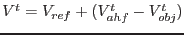
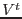
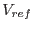
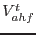
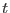

attmove is a utility task for use in the aid of analysis of moving targets (planets, comets etc). It is based on an algorithm devied by Pedro Rodriguez (prodrigu@xmm.vilspa.esa.es).
In contrast to movecalc, attmove creates a new Attitude History derived from an existing AHF, using a second input table which defines the track of the object as a function of time.
attmove uses selects an arbitrary reference pointing (currently calculated from the object track) and recalculates the attitude of the spacecraft (the VIEWRA and VIEWDECL entries in the AHF) according to the following formula:

Where  is the output attitude,  is the reference attitude,  is the spacecraft attitude in the source AHF at time  and is the coordinates of the target object at time , corrected for Geocentric parallax.